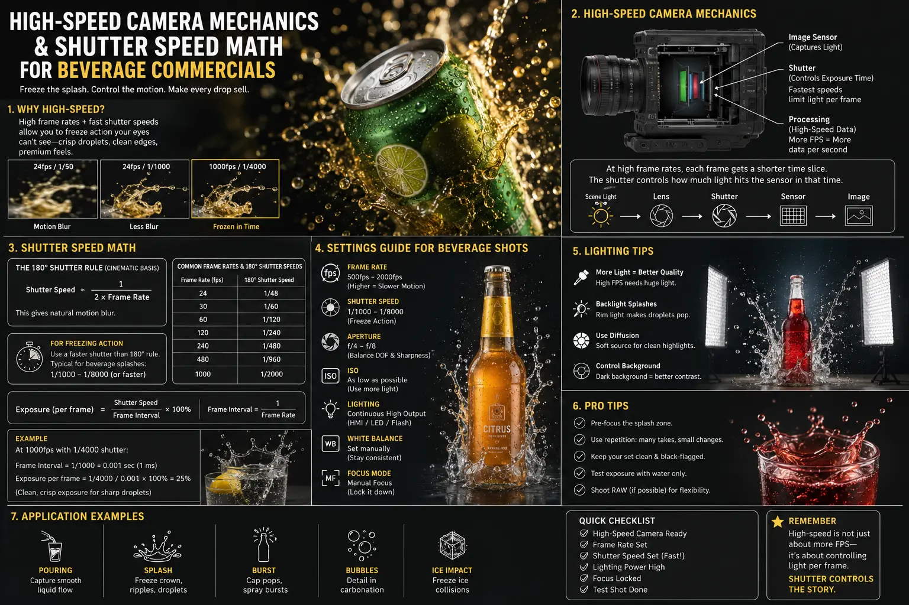
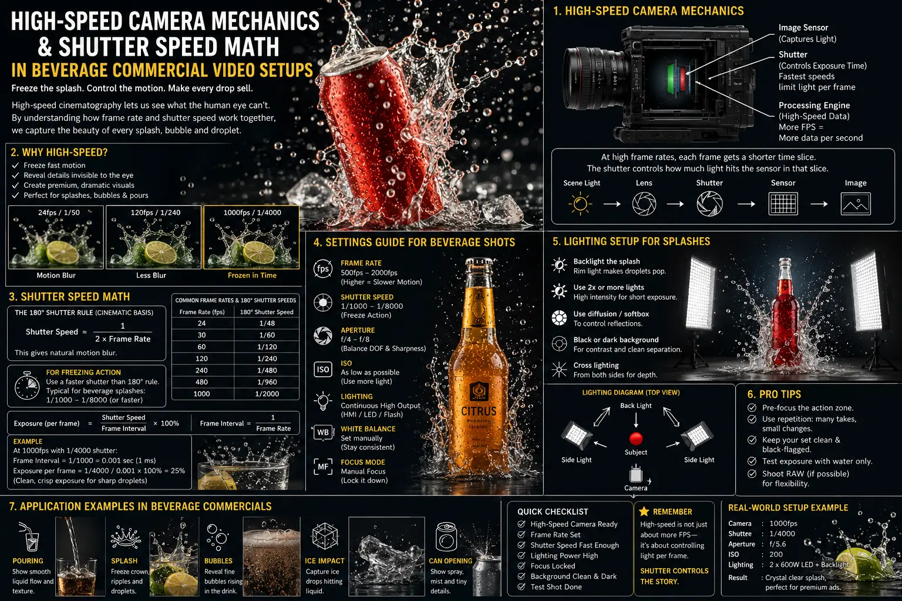
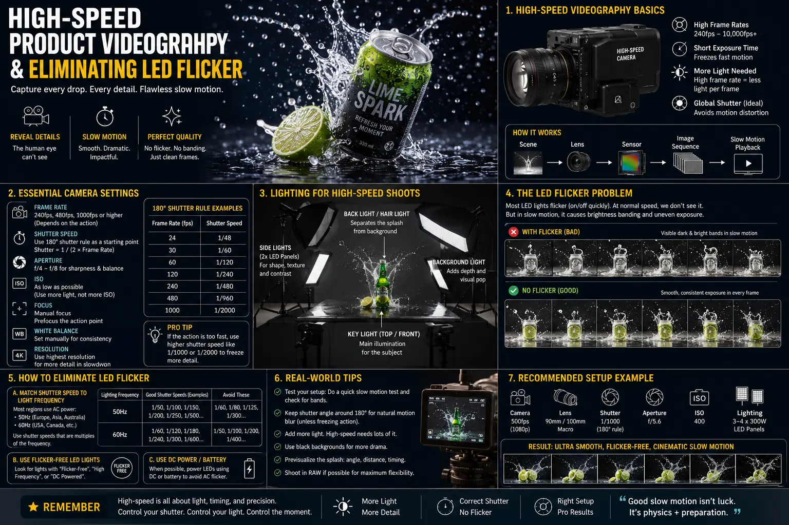

High-Speed Camera Mechanics and Shutter Speed Math for Beverage Commercials
The Optics and Physics of Appetite Appeal in Beverage Cinematography
In the fiercely competitive food and beverage sector, visual storytelling hinges on a single sensory objective: triggering instant consumer craving. When a viewer watches a beverage commercial, their brain processes visual cues—such as a crystal-clear ice cube plunging into a carbonated soda, a golden amber beer pour cascading into a frosty pint glass, or condensation beads glistening under dramatic rim lighting—in milliseconds. To capture these fleeting micro-moments with razor-sharp fidelity, commercial cinematographers rely on High-Speed Product Videography. Standard 24 frames-per-second (FPS) or even 60FPS broadcast cameras fail to reveal the intricate liquid geometry that defines modern high-end commercial spots. At standard frame rates, fast-moving liquid droplets blur into semi-transparent smears, obscuring the texture, clarity, and effervescence of the beverage.
Achieving iconic slow-motion liquid shots requires operating specialized cinema cameras—such as the Phantom Flex 4K or RED V-Raptor—at frame rates ranging from 1,000 FPS to over 3,000 FPS. However, simply ramping up the frame rate is insufficient. High-speed filming introduces extraordinary optical and physical challenges. As frame rates multiply, the time window during which light hits the camera sensor shrinks to fractions of a millisecond. Without rigorous mathematical calculations governing shutter speed, shutter angle, and pixel blur tolerances, beverage splashes become either underexposed dark frames or blurry visual noise. Modern Beverage commercial video setups demand an intimate integration of camera sensor mechanics, fluid dynamics math, and high-frequency lighting design.
For digital marketing agencies and e-commerce brand directors, investing in high-precision video assets is no longer optional. High-impact video content drives engagement across social feeds, landing pages, and broadcast campaigns. By mastering liquid splash shutter speed calculation and deploying Flicker-Free Studio Lighting, production teams can systematically manufacture high-converting Digital Ad Campaign Visual Assets. This comprehensive guide breaks down the optics, mathematical formulas, lighting physics, and motion-control strategies required to execute world-class high-frame-rate commercial shooting for beverage advertising photography and videography.
Deconstructing the Shutter Speed Math: Freezing Liquid Velocity
At the core of high-speed fluid cinematography lies the mathematical relationship between liquid droplet velocity, camera magnification, sensor pixel pitch, and shutter exposure time. Unlike solid subjects moving across a stage, liquid dynamics involve chaotic turbulence, surface tension breakup, and micro-droplet ejection velocities that frequently exceed 5 to 15 meters per second (m/s). If a liquid droplet travels across the camera sensor during the frame exposure window, it travels a specific physical distance measured in micrometers. If that displacement spans across multiple pixels on the camera sensor, the resulting image displays visible motion blur.
To eliminate motion blur during beverage advertising photography and slow-motion video shoots, cinematographers perform a precise liquid splash shutter speed calculation. The maximum allowable shutter exposure time (\(T_{exp}\)) is calculated using the following optical fluid equation:
\(T_{exp} = \frac{\text{Pixel Blur Tolerance} \times \text{Pixel Pitch}}{\text{Liquid Velocity} \times \text{Optical Magnification}}\)
Let us consider a real-world high-speed beverage commercial scenario: an ice cube dropped from a height of 30 centimeters into a soda glass filled with liquid. Upon impact, crown-splash liquid droplets are ejected at a velocity of 8 m/s (\(V = 8000 \text{ mm/s}\)). Using a 100mm macro cinema lens configured for a 1:2 optical magnification ratio (\(M = 0.5\)) on a Phantom Flex 4K sensor (pixel pitch of 18.5 micrometers, or 0.0185 mm), and setting an acceptable motion blur tolerance of 1.5 pixels:
- Allowable Sensor Blur Distance: 1.5 pixels \(\times\) 0.0185 mm = 0.02775 mm
- Projected Image Velocity on Sensor: 8000 mm/s \(\times\) 0.5 = 4000 mm/s
- Required Shutter Exposure Time (\(T_{exp}\)): 0.02775 mm / 4000 mm/s = 0.00000693 seconds \(\approx\) 1/144,000s
While extreme macro splash crowns require ultra-fast electronic global shutters (or specialized sub-microsecond strobe firing), standard high-speed macro liquid pours shot at 1,000 FPS operate with shutter angles between 90 degrees and 180 degrees. In digital cinema cameras utilizing rotary or electronic global shutters, shutter angle (\(\theta\)) determines exposure time based on the frame rate (FPS):
\(\text{Exposure Time} = \frac{1}{\text{FPS}} \times \left(\frac{\text{Shutter Angle}}{360^\circ}\right)\)
When conducting high-frame-rate commercial shooting at 1,000 FPS with a standard 180-degree shutter angle, the exposure time for each frame is exactly 1/2,000th of a second (0.0005s). Ramping the shutter angle down to 90 degrees tightens the exposure duration to 1/4,000th of a second (0.00025s), while a 45-degree shutter angle delivers a razor-sharp 1/8,000th of a second exposure. By narrowing the shutter angle, cinematographers lock individual airborne droplets in crystalline suspension, eliminating motion smearing and creating the crisp visual assets vital for modern Digital Ad Campaign Visual Assets.
Crystalline Droplet Clarity
Precision shutter speed calculations freeze chaotic liquid splashes, crown formations, and condensation trickles without motion blur artifacts.
Zero Strobe Flicker
Deploying high-frequency DC lighting ensures absolute light amplitude stability across thousands of frames per second, eliminating LED flicker in slow motion.
Frame-Accurate Repeatability
Automated solenoid liquid triggers and robotic motion control guarantee identical pour mechanics across multiple commercial takes.
High-Converting Appetite Appeal
Macro slow-motion visuals stimulate sensory responses in viewers, driving elevated view duration and ad engagement for beverage brands.

Lighting Physics for High FPS: Eliminating LED Flicker in Slow Motion
While shutter speed math solves motion blur, it creates a massive photometric challenge: severe light deprivation. At a standard 24 FPS shutter speed of 1/48s, camera sensors receive ample photons. But when shooting high-speed slow motion at 1,000 FPS with a 90-degree shutter angle (1/4,000s exposure), the camera sensor receives approximately 6.4 stops less light! To achieve proper sensor exposure without driving ISO into noisy digital gain territories, production studios must illuminate Beverage commercial video setups with extreme luminous flux—often exceeding 20,000 to 50,000 lux on the target subject area.
However, pouring immense light output onto a high-speed camera set introduces a second critical engineering hurdle: light source flicker. Standard AC electrical power grid currents alternate at 50Hz (in India and Europe) or 60Hz (in the United States). Conventional incandescent, standard LED, or magnetic ballast fluorescent fixtures pulse their light output at double the AC frequency (100Hz or 120Hz). When captured by a camera recording at 24 FPS, this subtle intensity pulse is invisible to the human eye. But when a camera shoots at 1,000 FPS, it captures 10 full frames during a single 100Hz AC electrical wave cycle! Some frames hit the peak of the light wave while others hit the zero-crossing trough, resulting in intolerable dark horizontal banding or violent flickering across the video playback.
Achieving eliminating LED flicker in slow motion requires specialized lighting physics and hardware engineering during High-Speed Product Videography:
- High-Frequency DC-Regulated LED Fixtures: Premium cinema LED arrays (such as Creamsource Vortex8 or ARRI Orbiters) bypass standard AC modulation using high-speed Direct Current (DC) power supplies and pulse-width modulation (PWM) operating at frequencies above 20,000Hz to 100,000Hz. At 20kHz+, the light cycle repeats so rapidly that even a 1/10,000s shutter exposure sees a steady, continuous stream of light photons.
- High-Speed Electronic Ballast HMIs: Hydrargyrum Medium-Arc Iodide (HMI) gas discharge lamps emit massive luminous output. When paired with electronic high-speed ballasts operating in 300Hz or 1,000Hz/3,000Hz square-wave modes, the current reversal across the arc tube is virtually instantaneous, flat-topping the light curve and preventing output dips between half-cycles.
- High-Wattage Continuous Tungsten Arrays: Massive tungsten incandescent lamps (such as 2K, 5K, or 10K Mole-Richardson fixtures) use thick tungsten filaments with heavy thermal inertia. Because the thick filament cannot cool down fast enough during the millisecond AC current zero-crossings, it maintains continuous, smooth thermal incandescence, providing reliable Flicker-Free Studio Lighting for high-speed macro work.
Combining Flicker-Free Studio Lighting with precise backlight diffusion is essential when capturing translucent liquids like beer, cider, fruit juices, and carbonated soft drinks. Positioning high-output flicker-free softboxes behind the glass illuminates the liquid body from within, accentuating amber and ruby color gamuts while highlighting glowing carbonation bubbles rising to the surface.
Advanced Camera Rigging, Solenoids, and Precision Motion Control
High-speed liquid splash events occur in the blink of an eye—a liquid drop collision or glass-clinking splash event typically lasts between 15 to 50 milliseconds from initial contact to dispersal. At 1,000 FPS playback, a 30-millisecond real-world event expands into 1.2 seconds of dramatic visual motion. However, attempting to manual pour liquid, drop ice cubes, or tilt a beverage bottle by hand during high-speed shoots leads to inconsistent results and dozens of wasted takes.
To achieve absolute repeatability in beverage advertising photography and high-speed commercials, production crews employ automated motion-control systems and precision mechanical triggers:
- High-Speed Cinema Robots (e.g., Bolt Robot Arm): Robotic cinema arms capable of accelerating at 5G and moving camera optics along 6-axis trajectories at speeds exceeding 4 meters per second allow the camera to follow falling drops, track pouring streams, or orbit around splashing glasses with sub-millimeter trajectory repeatability.
- Pneumatic and Solenoid Liquid Triggers: Industrial electronic solenoid valves connected to micro-controllers (like Arduino or Raspberry Pi rigs) drop liquid drops or release ice cube trap doors with millisecond precision. The microcontroller synchronizes the solenoid release signal directly with the camera's high-speed frame trigger and lighting pulse.
- Hydrophobic Glass Coatings & Acrylic Props: Glassware used in commercial shoots is meticulously treated with hydrophobic ceramic coatings (such as Rain-X or optical nano-silica sprays) to force water droplets into perfect spherical beads rather than flat sheets. Real ice melts under intense 50,000 lux studio lighting; thus, custom-carved optical acrylic ice cubes with calibrated density and refractive indices are used to ensure pristine visual clarity throughout multi-hour studio sessions.
- Glycerin Condensation Formulations: The tempting "frosty cold" sweat seen on glass exteriors is engineered using a 50/50 mixture of distilled water and pure vegetable glycerin sprayed onto hydrophobic glass surfaces. Glycerin does not evaporate under high studio lamp temperatures, allowing condensation beads to remain perfectly suspended across long high-speed camera takes.
High-Speed Camera Rigs
- Phantom Flex 4K (up to 1,000 FPS at 4K resolution).
- RED V-Raptor XL (high frame rates with global shutter modes).
- Sony FX6 / FX9 High-Speed Sensor modes for macro B-roll.
- Macro Cinema Prime Lenses (100mm T2.9 1:1 magnification).
Flicker-Free Studio Lighting
- Creamsource Vortex8 20kHz DC-regulated LED panels.
- ARRI M18 / M40 HMIs with 1,000Hz High-Speed Electronic Ballasts.
- Mole-Richardson 5K High-Thermal-Inertia Tungsten Fresnels.
- Ultra-high diffusion scrims for soft liquid backlighting.
Precision SFX & Motion Control
- MRMC Bolt High-Speed Robotic Arm integration.
- Arduino-controlled pneumatic solenoid drop triggers.
- Custom optical-grade acrylic ice props & hydrophobic sprays.
- Glycerin/water sweat mixtures for durable condensation.

Maximizing ROI: Crafting High-Converting Digital Ad Campaign Visual Assets
Capturing hyper-detailed slow-motion video is only half the equation; the ultimate business goal is transforming high-speed footage into high-converting Digital Ad Campaign Visual Assets that deliver positive return on ad spend (ROAS) for beverage brands. On platforms like Instagram Reels, TikTok, YouTube Shorts, and Meta Ads, user scroll speed is blistering. Viewers decide whether to skip an advertisement within the first 1.5 seconds.
High-speed macro visuals act as immediate "pattern interrupters." When a scroller sees a macro liquid splash frozen in crystal detail at 1,000 FPS, the visual novelty triggers an involuntary pause response. Neuromarketing studies confirm that macro liquid dynamics, effervescent fizzing bubbles, and icy drops stimulate the brain's gustatory cortex, driving immediate appetite appeal and brand recall.
To maximize visual asset utilization across omni-channel commercial campaigns:
- Modular Multi-Ratio Exports: Shoot high-speed commercial plates in 4K resolution at a 1:1 square framing or 4:3 open gate sensor aspect ratio. This allows post-production editors to crop and export native 9:16 vertical reels, 16:9 widescreen broadcast spots, and 1:1 e-commerce product videos from a single master high-speed recording session.
- Optical Flow Speed Ramping: Combine high-speed slow motion with real-time motion in post-production editing. Speed ramping from 24 FPS down to 1,000 FPS at the exact moment of liquid collision creates dynamic visual tension, accelerating viewer retention throughout 15-second ad spots.
- ACES Color Management for Translucent Fluids: Grade high-speed commercial footage in the Academy Color Encoding System (ACES) color space to preserve rich highlight roll-off in glowing backlight reflections. ACES prevents harsh clipping in bright liquid highlights and preserves rich color saturation in deep beverage hues.
Why Beverage Brands Partner with The PhD Ads in Madurai
Executing flawless high-frame-rate commercial shooting requires specialized camera gear, rigorous mathematical precision, custom prop engineering, and master color grading. At The PhD Ads, based in Madurai, we combine scientific technical expertise with creative commercial vision to produce world-class visual content for beverage brands, consumer packaged goods (CPG) companies, and regional enterprises across India and internationally.
Our dedicated production team specializes in end-to-end commercial filmmaking. From mastering liquid splash shutter speed calculation and building custom Beverage commercial video setups to deploying Flicker-Free Studio Lighting and high-speed motion rigs, we manufacture visual assets that command consumer attention. Whether you require a high-impact national television commercial, high-converting social media video ads, or premium product photography, The PhD Ads provides the technical excellence needed to elevate your brand.
Conclusion
High-speed camera mechanics and shutter speed math represent the nexus where physics meets creative advertising artistry. By calculating precise shutter exposure times for fast-moving fluids, deploying high-frequency Flicker-Free Studio Lighting to eliminate slow-motion flicker, and utilizing robotic motion control with solenoid triggers, commercial directors can capture breathtaking liquid dynamics. These captivating slow-motion sequences form the core of premium Digital Ad Campaign Visual Assets that captivate audiences, elevate brand perception, and drive commercial sales growth.
Ready to transform your brand's video content with professional High-Speed Product Videography and cinematic beverage production? Reach out to The PhD Ads today to discuss your upcoming campaign requirements.
Key Topics
Ready to Capture High-Speed Slow-Motion Beverage Commercial Visuals?
At The PhD Ads in Madurai, we leverage advanced high-speed product videography, precise shutter speed math, and flicker-free studio lighting setups to create high-converting visual assets for beverage commercials.
Email: team@e2o.in